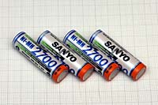
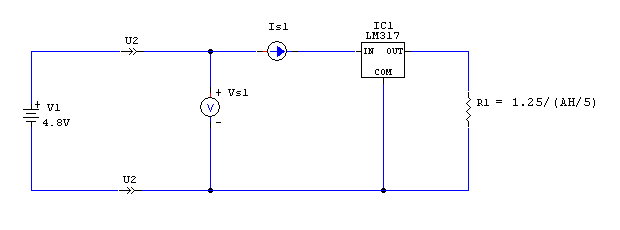
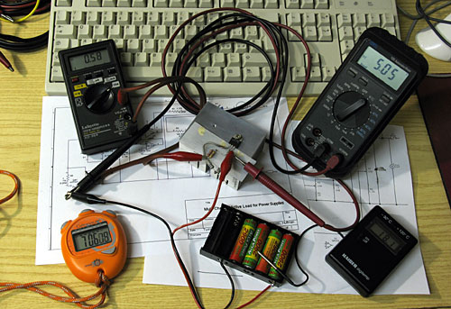

Batteries & energy
How to test the runtime of
rechargeable Ni-Mh accumulators "DIY" by R.Chirio
Page index
Tests on commercial batteries
2006-2009 In recent years we've seen remarkable growth in battery capacity, in 1995 there were only Ni-CD accumulators and their capacity in AA format was only 600mAh and already gave savings in the use of flash and various battery-powered devices.
Currently Ni-MH AA cells are available at a maximum rated capacity of 2900mAh and it suggests capacity will rise further. The improvement in these performances is due in turn to the fact that millions of mobile phones use such batteries; therefore manufacturers, in technological competition, continually find and invent new solutions and the quantity produced lowers prices and improves quality.
Personally with photography flashes and LED lamps I use many rechargeable batteries and often need to know their actual capacity to plan operating time.
How are accumulators characterized?... few know that the capacity mentioned as Ampere x hour is characterized at 0.2C What does this mean? It simply means that such a battery is not capable of delivering, for example, 2500mA for 1 hour, but 2500mA x 0.2 x 5 hours because discharging the battery in short times requires a lot of current which due to internal resistance and Joule heating degrades the capacity with increasing current draw.
In practice, if our current draw approaches the rated value of the batteries, we must rely on a capacity much lower than the one we purchased the rechargeables for.
This measurement method is also valid for car batteries, always characterized at 0.2C. In this case, it is clear that one needs a electronic load which allows discharge control with constant current of 10-15A....but this is another of my electronic projects.
| PANASONIC ENELOOP PRO batteries 2500 mAh Ni-Mh AA mod. BK-3HCDE/4BE | |||||||
|---|---|---|---|---|---|---|---|
| discharge time | Is |
tb |
mAh value |
average value=2396mAh Evaluation: EXCELLENT |
|||
| 1 | 4h 25m | 0,50 | 18° | 2208 | |||
| 2 | 4h 30m | 0,50 | 18° | 2250 | |||
| 3 | 4h 50m | 0,50 | 18° | 2415 | |||
| 4 | 4h 50m | 0,50 | 18° | 2415 | |||
| 5 | 5h 01m | 0,50 | 18° | 2508 | |||
| 6 | 5h 10m | 0,50 | 18° | 2580 | |||
|
November 2016 New generation batteries just released on the market, with a good guaranteed minimum capacity of 2500mAh, showing a residual capacity of up to 85% after 1 year, therefore very low self-discharge definitely superior to all others tested previously. For the test two packs of 4 accumulators were used, after several formation charges/discharges, the last 6 values detected were taken (*) Battery highly recommended, ideal for any use. To be kept in the drawer like an alkaline since always charged. Excellent for Flash and any application requiring starting current, such as motorized toys. (*) The batteries PANASONIC ENELOOP PRO BK-3HCDE They have engraved the production date on the packaging and battery body; I recommend purchasing batteries with a more recent date. In our case, the batteries that arrived had a production date of 5/2015, so 18 months old. Two packs tested; as soon as the package was opened, 2h 15m and 2h 30m of residual charge were detected, therefore a charge (50%) still sufficient to operate a flash or run a toy. |
|||||||
{kind=link}
| Batteries SANYO 2700 mA/h Ni-Mh AA mod. HR 3U | |||||||
|---|---|---|---|---|---|---|---|
|
 |
discharge time | Is |
tb |
mA/h value |
average value=2634mA/h Evaluation: EXCELLENT |
||
| 1 | 4h 45m | 0,54 | 20° | 2565 | |||
| 2 | 4h 50m | 0,54 | 20° | 2610 | |||
| 3 | 5h 03m | 0,54 | 20° | 2727 | |||
|
November 2009 New-generation batteries with good capacity and guaranteed minimum of 2500mAh, with low self-discharge, definitely superior to all others tested previously. Very recommended battery, it has good capacity, corresponding to the rated data. Ideal for every flash use application or to power Power Led. |
|||||||
| SONIC ENERGY 2500 mAh Ni-Mh AA batteries sold only in LIDL supermarkets | |||||||
|---|---|---|---|---|---|---|---|
| discharge time | Is |
tb |
mAh value |
average value=1561mAh Evaluation: Insufficient |
|||
| 1 | 3h 00m | 0,50 | 21° | 1500 | |||
| 2 | 3h 05m | 0,50 | 20° | 1560 | |||
| 3 | 3h 15m | 0,50 | 21° | 1625 | |||
|
June 2008 Batteries with optimistic nameplate rating were tested in over 4 charge/discharge cycles without showing performance improvements. Sold only as a promotion in LIDL supermarkets, the capacity is very low compared to the 2500 claimed. |
|||||||
{kind=link}
| GP battery 2700mAh Ni-Mh AA | |||||||
|---|---|---|---|---|---|---|---|
| discharge time | Is |
tb |
mAh value |
average value=2445mAh Evaluation: Good |
|||
| 1 | 4h 20m | 0,54 | 22° | 2340 | |||
| 2 | 4h 30m | 0,54 | 22° | 2430 | |||
| 3 | 4h 45m | 0,54 | 22° | 2565 | |||
|
April 2008 Batteries with reasonable effective capacity, still improving after 5 charge/discharge cycles. Approach the minimum guaranteed 2600mAh. Very valid and efficient the POWER BANK V800C battery charger capable of charging 4 AA cells in less than 60 minutes. The controller manages each battery individually and cuts off the charging current once the rated value is reached. During the charging phase, to reduce heating, a small fan cools the accumulators. Charger very suitable for those in a hurry to recharge accumulators, good performance with all accumulators from 2000 to 2900mAh even from other brands. |
|||||||
{kind=link}
{kind=link}
| Batteries ANSMANN 2850mAh Ni-Mh AA | |||||||
|---|---|---|---|---|---|---|---|
| discharge time | Is |
tb |
mAh value |
average value=2390mAh Evaluation: Sufficient |
|||
| 1 | 4h 00m | 0,57 | 22° | 2280 | |||
| 2 | 4h 30m | 0,57 | 20° | 2565 | |||
| 3 | 4h 05m | 0,57 | 21° | 2327 | |||
|
April 2008 Batteries with optimistic nameplate rating were tested in over 6 charge/discharge cycles without showing performance improvements. Positive the fact that they are sold with 2 years warranty, unusual for rechargeable batteries. |
|||||||
{kind=link}
| Batteries SANYO ENELOOP 2000mAh Ni-Mh AA HR-3UTG | |||||||
|---|---|---|---|---|---|---|---|
| discharge time | Is |
tb |
mAh value |
average value=1788mAh Evaluation: sufficient |
|||
| 1 | 4h 15m | 0,40 | 20° | 1700 | |||
| 2 | 4h 30m | 0,40 | 20° | 1800 | |||
| 3 | 4h 40m | 0,40 | 20° | 1864 | |||
|
March 2008 Eco-friendly batteries, (similar to GP) are sold already charged, and once charged they are maintained for several months, as they have a very low self-discharge, they have a rated capacity of 2000mAh. http://www.panasonic-eneloop.eu/it/prodotti From Sanyo I expected better performance, in the three tests it does not reach the rated data, nor even the minimum guaranteed 1900mAh. Economical the battery charger supplied with the ENELOOP, the recommended charging time is 10-12 hours, a bit long for heavy use of rechargeables. |
|||||||
{kind=link}
{kind=link}
| Batteries GP Recyko+ 2050mAh Ni-Mh AA | |||||||
|---|---|---|---|---|---|---|---|
| discharge time | Is |
tb |
mAh value |
average value=1978mAh Evaluation: excellent |
|||
| 1 | 3h 15m | 0,58 | 19° | 1885 | |||
| 2 | 3h 20m | 0,58 | 20° | 1931 | |||
| 3 | 3h 40m | 0,58 | 20° | 2120 | |||
|
February 2008 Ecological batteries, are sold already charged, and once charged they stay charged for several months, as they have very low self-discharge, they have a rated capacity of 2050 mAh http://www.gpbatteries.it/batterie-ricaricabili/ For convenience of testing, they were discharged at a current higher than 0.20C, therefore the already good results obtained, must be considered excellent, better than the rated specifications. Highly recommended battery, it doesn't have the highest capacity, but the data is very honest. Ideal to keep for long times in the camera bag for any flash use eventuality. |
|||||||
{kind=link}
| Batteries EYEPOWER 2950mAh Ni-Mh AA | |||||||
|---|---|---|---|---|---|---|---|
| discharge time | Is | tb | mAh value |
average value=1334mAh Evaluation: insufficient |
|||
| 1 | 1h 55m | 0,58 | 22° | 1110 | |||
| 2 | 2h 20m | 0,58 | 20° | 1351 | |||
| 3 | 2h 40m | 0,58 | 20° | 1542 | |||
|
January 2008
I was attracted by the low purchase price of these Chinese accumulators, unfortunately the disappointment is great in finding the very low capacity demonstrated. Even after several charge-discharge cycles they never exceeded 1550mAh I strongly advise against purchasing such products on the Internet. |
|||||||
{kind=link}
| Batteries Alcava 2900mAh Ni-Mh AA | |||||||
|---|---|---|---|---|---|---|---|
| discharge time | Is |
tb |
mAh value |
average value=2181mAh Evaluation: barely sufficient |
|||
| 1 | 3h 33m | 0,58 | 25° | 2059 | |||
| 2 | 3h 45m | 0,58 | 24° | 2175 | |||
| 3 | 3h 59m | 0,58 | 25° | 2310 | |||
|
May 2007 Verification data on new Alcava Ni-Mh 2900mAh batteries. (Prior to this measurement three formation charge/discharge cycles were performed). It can be seen that the rated data of the accumulators is somewhat optimistic, we'll see later if those accumulators will increase capacity and by how much after a certain number of charge-discharge cycles. January 2008 The batteries (accumulators) were retested after 9 months of operation, during this period they were charged approximately 20 times, the average capacity now measured is 2070mAh. |
|||||||
{kind=link}
September 2007
CIRCUIT DIAGRAM battery test system constant current.

Circuit diagram to test Ni-Mh rechargeable batteries.
Using the LM317 IC in constant current configuration we can make a circuit that guarantees battery current control for the entire discharge duration.
Note well, this configuration is suitable for a minimum of 4 batteries, with fewer batteries it doesn't work because the working voltage is too low to compensate for the voltage drops on the LM317 + 1.25V of the load.
Having identified the accumulators to test, we must calibrate the output current as a function of the accumulator current.
Example:
accu Ni-Mh of 2900mAh the R becomes 1.25/ (2900/5) = 2.155 ohm 1W for an I=0.580A
This 2,155 ohm R must be as precise as possible, alternatively you can put a 10W 5-10ohm rheostat in place of R1 and adjust the current value by reading the precise numerical value on the ammeter in series.
The LM317 regulator must be mounted on a heatsink, as it must dissipate the battery discharge energy. I remind you that LM317 supports dissipation up to 20W.
You also need a digital voltmeter to read the battery voltage.

Arrangement of components during the test.
On the left the multimeter in ammeter configuration, in this case the constant current read is 0.580 A. On the right the voltmeter reading the voltage of 4 batteries, the test ends when the voltage reaches 4.00Volt.
The stopwatch is essential to measure the discharge time. Also the battery temperature can be measured for comparison with future measurements.
In the center the LM317 regulator with series resistor of 2.155 ohm obtained with a series parallel.
For those who need to make many measurements, the circuit is easily automated with the use of logic components or better with an Arduino system.
Test execution.
Charge the batteries fully, when charged wait for them to reach room temperature. It's always good to charge the accumulators slowly, to avoid overheating them, 6-8 hours of charging is the right time for long accumulator life.
Connect the battery pack to the discharge system and start the timer.
The measurement ends when the battery voltage corresponds to 4.00 Volts total (test of 4 batteries in series), read the time and write the value in the table.
For reliable data it is advisable to repeat the measurement three times and calculate the average value of the three measurements.
Conclusions
From what can be seen from the tests, it is better to buy batteries with only 2000-2200mAh rated, but more honest and matching the stated values.
It is always advisable to recharge discharged batteries immediately, do not leave them discharged for a long time. Important, do not let the batteries heat up above 40° otherwise they will degrade very quickly.
Battery life can exceed three years, generally they should be monitored for any oxidation and electrolyte leakage, in which case all four must be disposed of, do not leave batteries in equipment for long periods, if you do not use the toy or flash, it is better to keep the batteries in a dry place inside a plastic battery holder.
© Roberto Chirio: all rights reserved.